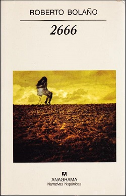
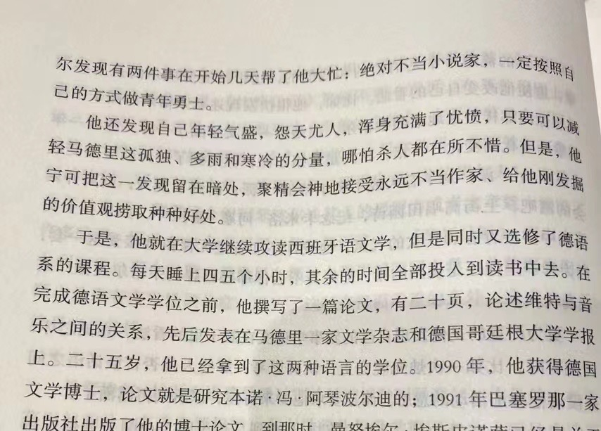

A year has passed, I opened Bolaño again. At first it was just a few pages, four characters, four sides of "me". It's the strong and perhaps angry stimulant of self-pity; it's the perseverance under the cold eyes of the unwelcome; it's the lack of perseverance in the nihilism and confusion of the society that "If volition is bound to social imperatives, as William James believed, and it's therefore easier to go to war than it is to quit smoking."; it's the fear and ambivalence towards writing; it's the strength to return to the reality of survival brought by the reinforcement of the value of not being able to be a writer. It is also a banishment of extreme idealism for that two-year-long period of bone-scraping; it is also an asceticism to find strength in nothingness.
时隔一年，又翻开了波拉尼奥。最初不过寥寥的几页，四位人物，是四个关于"我"的侧面。是那种强烈的也许是愤怒般自我怜悯的兴奋剂；是在不受欢迎的冷眼下的坚持；是"戒烟比打仗更容易"的对社会的虚无主义与迷茫的毅力缺失；是对写作的一种恐惧与矛盾；是当不了作家这种价值观的强化带来的回归现实的生存力量；也是对那段长达两年的刮骨疗伤对极端理想主义的放逐；也是对在虚无中寻找力量的苦行。
I think my thoughts are powerful, even if people often fail to understand and categorize me as a freak when I am entangled in them, associating such a shell with words like cowardice, incompetence, and pathetic, and rejecting them with expulsion. This is somehow true, when I look at my face in the mirror, when I laugh with people, it's so repugnant to what I am when I write and think that it's strange and obscure even to me.
我认为我的思想是有力的，哪怕在我被思考纠缠时人们往往无法理解与将我归类于怪胎的一类，将这样的躯壳与懦弱无能及可悲这些词联系附以驱逐的排斥。这是某种程度上的事实，当我看着镜子里的我、与人调笑时的面孔，是与写作与思考时我的一切相斥的，连我自己也感到陌生与晦涩。
People of all shapes and sizes appear in my world, sometimes they show disgust and affection for me, but I always have the habit of seeing through those well-intentioned and fancy but weak expressions the stubbornness and vulgarity of the driving force behind them — belonging to human nature, not to the individual. I sometimes wonder why people use that kind of chemistry as the blood of their lives, but I also let it go. I have no intention of shouting out the philosophy of my feelings, because I see the happiness, and the inapplicability of my pure and powerful loneliness in this world. It is as if these few words will also be reviled and feared. It is an expression and outpouring of emptiness.
形形色色的人们出现在我的世界，有时他们对我表现出厌恶与喜爱，但我总是习惯性的透过那些好意又花哨但微弱的表达看到背后驱动力的顽劣与低俗——属于人性的，并不是属于个体的。我又时感叹为何人们将那样的化学反应作为赖以生存的血液，但也释怀，但又无意喊出我感悟的哲学，因为我看到了幸福，与我这纯粹又有力的孤独在这世道上的不适用。就好像这几句寥寥的文字也将受之唾弃与恐惧。是对虚空的表达与倾诉。
Thankfully, I am no longer afraid of anything that might be said about me. Because there is nothing I know more about shaking and destroying my own mind than myself — this torture is officially over.
值得庆幸的是，现在我不再畏惧任何对我的看法。因为再没有事无能比我自己更懂得撼动与摧残自己的心灵——这段折磨正式的结束了。
On Literature & Writing
Literature, the painful proposition of my life, is the holy salvation. From letting books fill that sensitive fear and lack of self-expression, to the joy of words being praised, to their deterioration and reinvention, to now becoming a soft and devout confession. My writing is not for anyone, including myself. Writing gives me peace, but for the rest of my life I hesitate and agonize over being a "writer," and I have no recollection of the aesthetics of this self-mutilating madness. When I let myself be surrounded by utilitarian and realizable ideals, the strength that this will gives me is what I aspire to.
文学，是我生命中痛苦的命题，亦是圣洁的救赎。从让书本填满那份敏感的恐惧与缺失的自我表达，到文字被褒奖的欣喜与变质又推翻重造，再到现在成为一种柔声又虔诚的倾诉。我的文字不是写给任何人的，包括我自己。写作让我宁静，可在余下的时光我只对"作家"踌躇与痛苦，对这种自虐式的疯狂美学有些不存留念。当我任凭功利与可实现的理想将我包围，这种意志赋予我的强大是我向往的。
Like Baudelaire on the title page, "In the wearying desert, there is a terrifying oasis."
就像扉页的波德莱尔，"在令人厌倦的沙漠里有一片恐怖的绿洲。"
But I will still think, I will read, I will write my own childish meditations from time to time. Will hold on to this individuality in my own time, and perhaps I will, like Roberto, try to make an epic poem mapping me at the age of 40.
但我仍然会思考，会阅读，会时不时的写我自己幼稚的沉思录。会在属于我自己的时间坚持这样的个性，也许我会像罗贝托，在40岁时尝试着作一部映射我的史诗。
Now I have made a relatively long-term decision, which is a reminder of the past and an apology for the oasis. And thus a determined turn to try to conquer this vile and worthy desert.
现在我做出了一个相对长期的决定，这是对过去的留念，对绿洲的致歉。从而决然的转身试图征服这片卑劣又值得征服的沙漠。

Roberto Bolaño · 2666

Gustave Courbet · Portrait of Baudelaire · 1848

Aug 9, 2023 — 2666